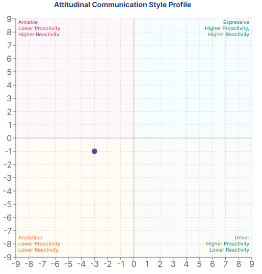
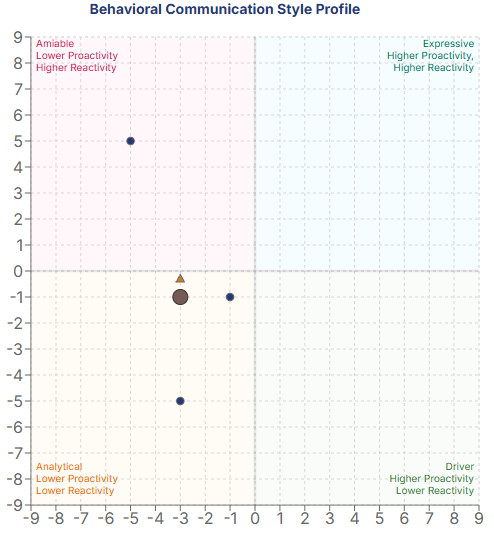
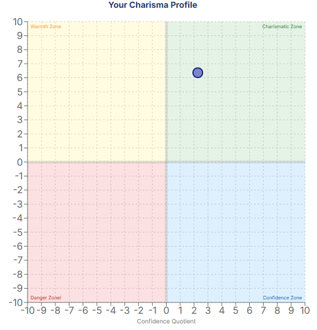

University of Arizona
Business Management major · Real Estate minor · Expected graduation May 2027
Hi, I'm Aiden. I'm a Business Management student with a minor in Real Estate, and I believe strong relationships are at the center of every great team and opportunity. Playing soccer my whole life helped shape that belief.
I'm building a career around communication, trust, and showing up for the people I work with.
I care about the work I do, but just as much about the people I do it with.
I'm studying Business Management at the University of Arizona's Eller College of Management, with a minor in Real Estate. My goal is to build a career where I can work with people, earn their trust, and keep learning.
I've played soccer for most of my life, and it has shaped how I think about commitment, accountability, and being part of something bigger than myself. Those same lessons have carried into my jobs, summer camp leadership, and the way I build relationships.
Whether I'm working with a team, helping a customer, or meeting someone new, I try to bring a positive attitude, communicate clearly, and follow through.
Business Management major · Real Estate minor · Expected graduation May 2027
As a lifeguard, I learned to stay calm under pressure, solve problems, and communicate clearly in difficult situations.
Led groups of 15–25 campers, coordinated activities, and worked with counselors and families to create a positive experience.
Worked across multiple restaurant roles and provided neighborhood services, building adaptability and people skills.
I made this video to share a little more about who I am, what I've learned at Eller, and why teamwork and meaningful relationships matter to me.
Watch on YouTube ↗A professional reputation is built through everyday interactions. At Eller, I've learned that being approachable and easy to work with is a strength — and that becoming a stronger professional also means speaking up, preparing well, and making my ideas heard.
I naturally try to build connections and help teams work together. I also want to be more confident about sharing my own perspective, even when the group is leaning in another direction.
Trust, communication, loyalty, and teamwork guide how I approach relationships. I want people to know they can count on me — both personally and professionally.
Feedback has helped me see that my easygoing attitude works best when I pair it with preparation, punctuality, and the confidence to share my ideas.
The qualities I want to be known for are not just words I would put on a resume. They come from experiences that have shaped how I treat people, take responsibility, and work toward a shared goal.
I believe trust comes from the small things: being consistent, being honest, and doing what you say you will do. I want people to feel comfortable relying on me.
Where I learned it: While doing gardening and general assistance for neighbors, I built recurring client relationships. That experience showed me that reliability is what brings people back, not just a good first impression.
I've always been most motivated when I'm working toward something with other people. To me, being a good teammate means contributing, communicating, and helping others succeed too.
Where I learned it: Playing soccer throughout my life taught me to depend on teammates and put the group ahead of individual recognition. At Red Lobster, working different positions showed me how much a team depends on everyone doing their part.
When people are counting on me, I take that seriously. Being dependable also means staying calm, making a decision when necessary, and taking ownership of the result.
Where I learned it: As a lifeguard, I handled medical incidents and difficult patron interactions. As a summer camp group lead, I supervised 15–25 campers, organized activities, and helped maintain a safe environment.
I value the ability to connect with different people, listen to what they need, and make them feel respected. I'm also learning that strong communication means sharing my own opinions instead of always going with the flow.
Where I learned it: Working with campers, parents, customers, and coworkers taught me to adapt how I communicate. Feedback from my Eller teammates helped me recognize that I should speak up sooner and be more prepared to defend my ideas.
I see myself as loyal, approachable, and someone who works well with others. Feedback from my Eller teammates has supported that side of my identity: they have described me as a mediator who builds good relationships and helps a team work through challenges.
But I have also heard that I can be too willing to go with the flow and that I need to improve my preparation and punctuality. That matters because the reputation I want in a future business or real estate career is not just “easy to work with.” I want to be someone who is trusted to contribute ideas, take initiative, and follow through.
My next steps: Before each team meeting, I'll prepare at least one specific idea; I'll contribute it early instead of waiting for someone to ask; and I'll plan to arrive ahead of time. I also want to keep asking teammates for feedback so I can see whether my actions are matching the professional image I'm trying to build.
These assessments help me compare my attitudes toward communication with the behaviors reflected in a separate profile. I don't want to be defined by one dot on a chart, but the results help me ask where I'm strong and where I can grow.

My self-perception result falls in the Analytical quadrant, around (−3, −1). I see myself as someone who listens first, thinks before speaking, and tries to understand the people around me. I developed that habit working with campers and parents, where listening carefully was just as important as giving directions.
In summer camp, I had to balance being approachable with keeping a group of 15–25 kids on schedule and safe. That experience taught me that listening matters, but so does being willing to step forward and make a decision. I want to bring more of that decisiveness into professional conversations.
Self-perception: Attitudinal Communication Style Profile · approximately (−3, −1).

This behavioral chart shows points across the Amiable and Analytical areas, with a central marker near (−3, −1). That makes sense to me: working as a lifeguard sometimes required calm, direct communication, while coaching and encouraging campers called for patience and warmth. These are examples of how I adapt, not claims about who submitted each plotted response.
For me, the lesson is to keep the approachable side of my personality while becoming more confident and direct when a team needs my input.
The graphic does not identify who provided each point, so I won't assign specific responses to classmates or survey participants without confirming the source.

My result lands in the chart's Charismatic Zone, with a connection quotient of about 6 and a confidence quotient of about 2. I recognize that emphasis on connection from years of soccer, working with families at summer camp, and building repeat relationships with neighbors who trusted me with their yards and projects.
The lower confidence score gives me a useful goal: be as comfortable speaking up as I am getting to know people. I have practiced that through presentations and leading activities, and I want to keep improving.
The plotted position is approximate; this is my reflection on the assessment, not a clinical or fixed personality label.
In future team meetings, I'll come prepared with at least one idea or question, share it early, and ask for feedback afterward. I want my professional reputation to reflect both sides of me: someone people trust and someone who confidently contributes.
A lot of what I've learned about leadership came from outside the classroom: working with kids, keeping people safe, helping neighbors, and being part of a team.
As a group lead at OV Community Recreation Center, I supervised 15–25 campers ages 6–14. I planned games, coordinated schedules, mentored junior counselors, and worked with parents and camp leadership. I learned that being a leader means making people feel included while taking responsibility for the group.
What I gained: Leadership, patience, planning, communication.
At the recreation center, I handled medical incidents and challenging patron interactions while helping keep the pool safe and welcoming. It taught me to pay attention, make decisions under pressure, and communicate clearly when people are counting on me.
What I gained: Responsibility, conflict resolution, judgment.
I built recurring neighborhood clients by offering gardening and general assistance. This taught me something simple that I carry into every professional relationship: show up, listen, and follow through on what you promise.
What I gained: Initiative, customer relationships, reliability.
I worked as a host, cook, busser, and dishwasher. Seeing the restaurant from different positions helped me appreciate the people behind every good guest experience and learn how to adapt when things get busy.
What I gained: Adaptability, teamwork, customer service.
I've played soccer for as long as I can remember, and it's a big part of who I am. Over the years, the sport has taught me how to trust teammates, communicate under pressure, bounce back after setbacks, and celebrate wins together. I've learned that being a good teammate isn't about being the loudest person on the field — it's about showing up, doing your part, and supporting the people around you. I bring that same attitude into my jobs, friendships, and professional life.
What I gained: Teamwork, commitment, perseverance.
I've created and edited YouTube content that has reached more than 10,000 views. I enjoy finding creative ways to hold an audience's attention and communicate an idea clearly.
What I gained: Video editing, storytelling, digital communication.
The best examples of my skills come from things I've actually done: leading groups, serving customers, building relationships, and learning how to communicate through video. These examples show the experiences behind my professional goals.
The situation: I wanted to introduce myself to people who might work with me in the future.
What I did: I put together a personal story using on-camera speaking, photos, and footage from my life and school experiences.
What it shows: Communication, video storytelling, confidence on camera, and the importance I place on relationships.
The situation: At OV Community Recreation Center, I was responsible for groups of 15–25 campers, ages 6–14.
What I did: I organized activities and schedules, supervised campers, supported junior counselors, and communicated with families.
What it shows: Organization, adaptability, patience, and the ability to create an environment where people feel included.
Supporting sample to add: a camp activity plan, schedule, or other work I personally created, if available.
The situation: Outside of school and work, I've explored video editing and online content creation.
What I did: I created and edited YouTube content that has received more than 10,000 views.
What it shows: Creativity, attention to audience, technology skills, and the ability to communicate through visual media.
Supporting sample to add: a link or screenshot from the original content, with my role clearly explained.
From leading summer campers and lifeguarding to restaurant work and helping neighbors, I’ve learned that trust is built through consistency, communication, and a willingness to help.
Updated to reflect my Business Management major and Real Estate minor.
Read my resume below, or download a copy using the buttons above.
Whether you want to talk about business, real estate, or a potential opportunity, I'd be happy to connect. Relationships are important to me, and I'm always open to meeting new people.
Based in Tucson, Arizona · University of Arizona